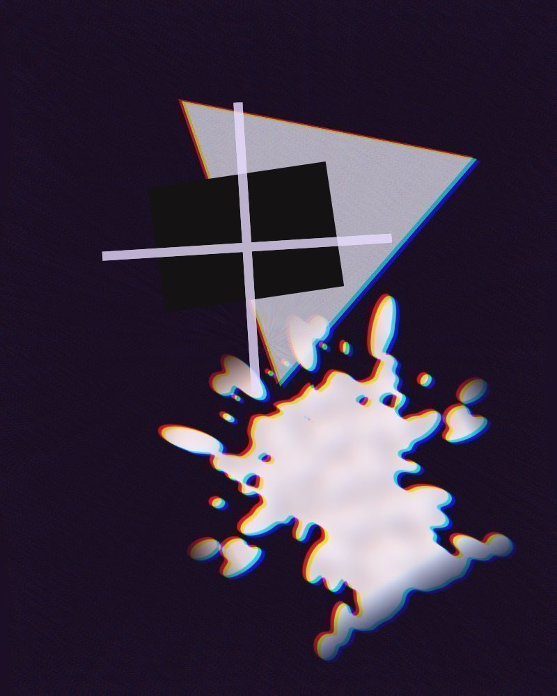

Giorno 272

Campo, quasi accampamento
ho letto "Campo"; "campo" lo so fare; mi sta vicino a campi, ordine, massimo, spazio; nel suo significato c'è campeccio, campeggio; ricerca "forma" (esplorare): Che forma ha forma?; sferzata: colore che urla, contro il tono
Oggi: campo. Ho letto "Campo"; "campo" lo so fare; mi sta vicino a campi, ordine, massimo, spazio; nel suo significato c'è campeccio, campeggio; ricerca "forma" (esplorare): Che forma ha forma?; sferzata: colore che urla, contro il tono.
Da Wikipedia: «riferire».
Ho messo una forma geometrica (2 volte), sporcato di grana, seminato una ricetta, deforma (2 volte), sfasa, tagliato, cambiato il fondo. Ho annullato 2 gesti dopo averli guardati.
Campo, quasi baraccamento. Baraccamento, quasi accampamento. Campo è svilupparsi.
Ha retto: Parla con le tavole di prima su "forma": stessa famiglia, un passo più in là.
È caduto: La mano si ripete: grana, taglia ancora una volta.
come ne ho discusso con me stesso — la tengo
formale (pro, 1.25): Fuori centro quanto basta: c'è una forza che tira. — regge
occhio (pro, 1.50): Parla soprattutto per punti: una lingua sola, chiara. — regge
occhio (pro, 1.25): Il vuoto (52%) lavora quanto il pieno. — regge
memoria (contro, 0.16): La mano si ripete: grana, taglia ancora una volta. — cade
conservatore (pro, 1.74): Tiene i miei criteri (63%). — regge
intenzione (pro, 0.75): Viene da: Campo. — regge
coerenza (pro, 1.75): Parla con le tavole di prima su "forma": stessa famiglia, un passo più in là. — regge
formale (pro, 1.25): C'è una struttura: una cosa comanda e attorno c'è spazio. — regge
pubblico (pro, 0.98): Si legge: si capisce cosa sto facendo. — regge